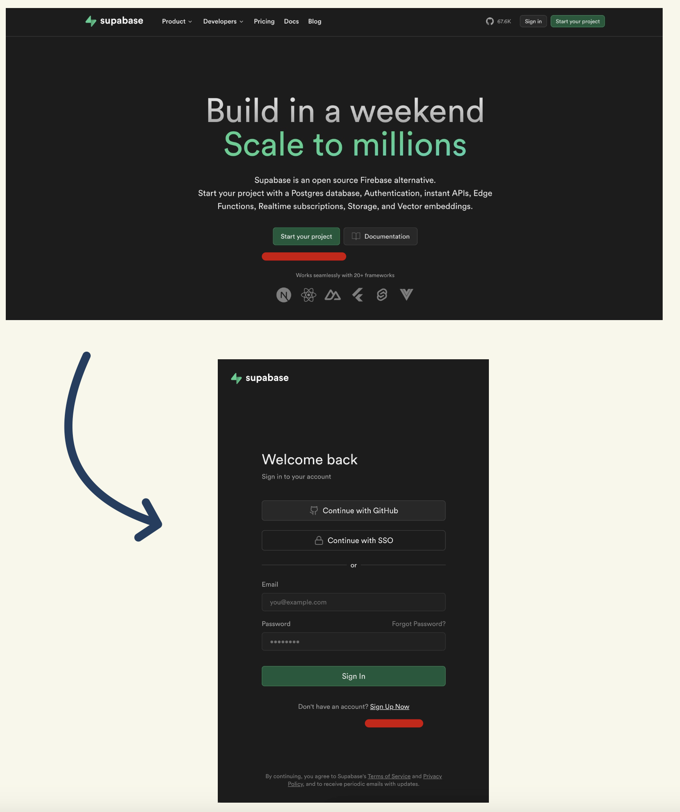
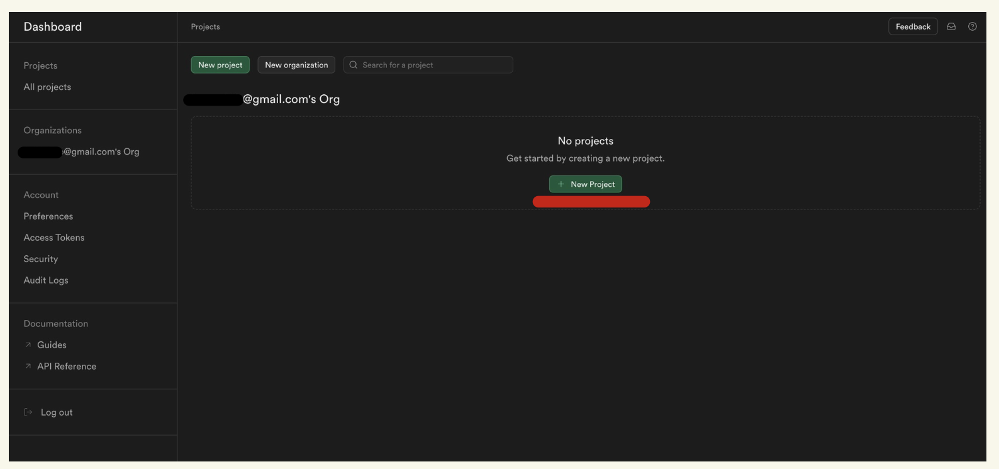
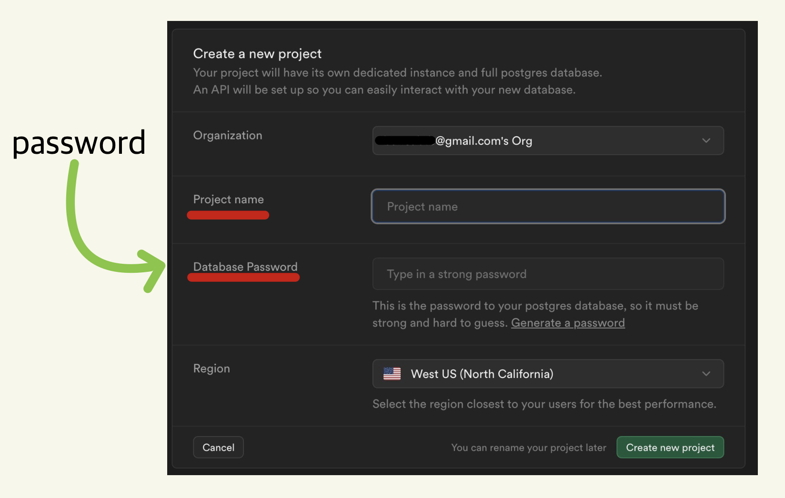
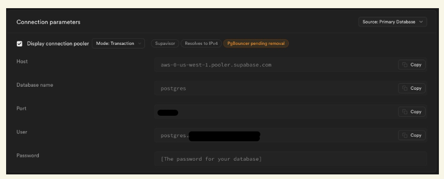

This guide will help users set up a Supabase account to work inside of SurveyDown for quick & live server updates
Step 1: Creating your account.
To begin your database setup that involves creating an account on the SupaBase website.
Step 2: Creating your account.
From the Main page, select “Start your Project” underlined in red.

Step 3: Creating your database.
After creating your new account proceed to your dashboard, and select “New Project”

Step 4: Creating your database.
The next step is to create your respective database, be sure to take note of the database password as this will be needed later on.

Step 5: Finding our DB parameters.
While on your project dashboard select the settings gear in the bottom left.


Step 7: Finding our DB parameters.
Take note of all the of the connection parameters, as well as the database password in Step 4.

Step 8: Taking a look at the sd_database() function.
Now that we’ve created our database and have gotten all the needed parameters we can now connect the database to our survey. Taking a look at our code inside of our survey.qmd file you may notice the 6 parameters, 5 of which we’ve discovered earlier. The last parameter would be “table_name”, this parameter can be any name of your choosing.
Note: All parameters currently listed as NULL must be wrapped in quotes when replaced.
# surveydown stores data on a database that you define at https://supabase.com/
# To connect to a database to store the survey data, update this with details
# from your supabase account and database. See documentation for details.
# For security, we recommend storing your supabase password in your R
# environment instead of hard-coding it here, which you can open and edit with
# usethis::edit_r_environ()
db <- sd_database(
host = NULL,
db_name = NULL,
port = NULL,
user = NULL,
table_name = NULL,
password = Sys.getenv("SUPABASE_PASSWORD")
)
# If you don't have a database setup you can just leave the function blank.
db <- sd_database()As you may also notice db is defined twice. After putting in your parameters in their respective places make sure to delete the line:
db <- sd_database()You may also notice that our password parameter is hidden inside of our R environment. This is for security reasons and is recommended.
Step 9: Putting the dasebase Password inside of the R env.
This step shows how to put your database password inside of the R environment.
First: Open the R environment.
This should open up a new R tab called “.Renviron”
usethis::edit_r_environ()Step 10: Bringing it all together.
Now that we have our password secure and all other parameters we can update our sd_database() function from Step 8 to look like this:
db <- sd_database(
host = "aws-0-us-west-1.pooler.supabase.com", #This varies based on location,
#check Step 7.
db_name = "postgres", # For the purpose of Supabase, this will always be "postgres".
port = "####", # Your 4 digit port number from Step 7.
user = "postgres.UserValue", # This is the User parameter from Step 7.
table_name = "What Ever Name You Want", # This is what your table name will be.
password = Sys.getenv("SUPABASE_PASSWORD") #Database password - Steps 4 and 9.
)